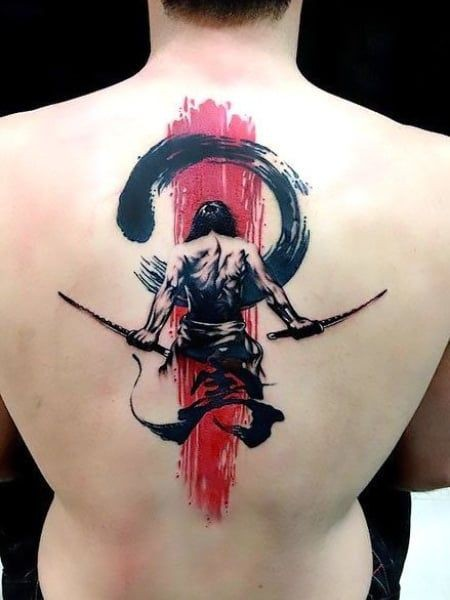
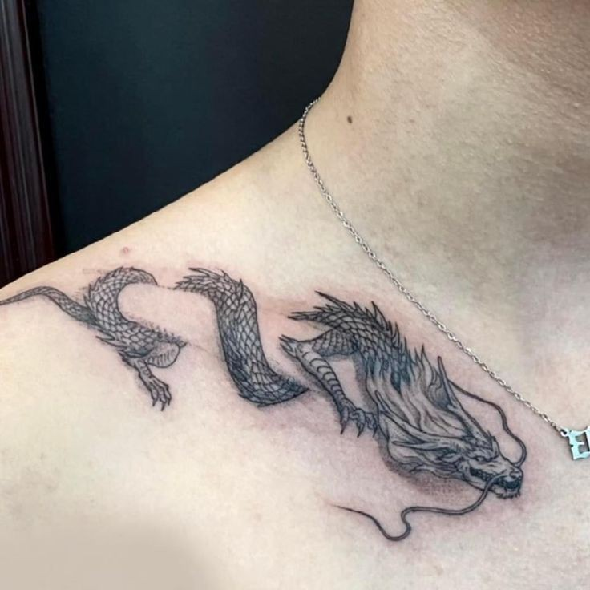
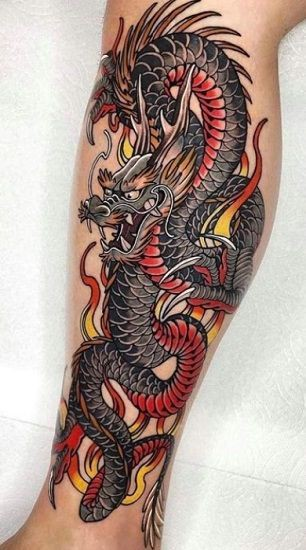
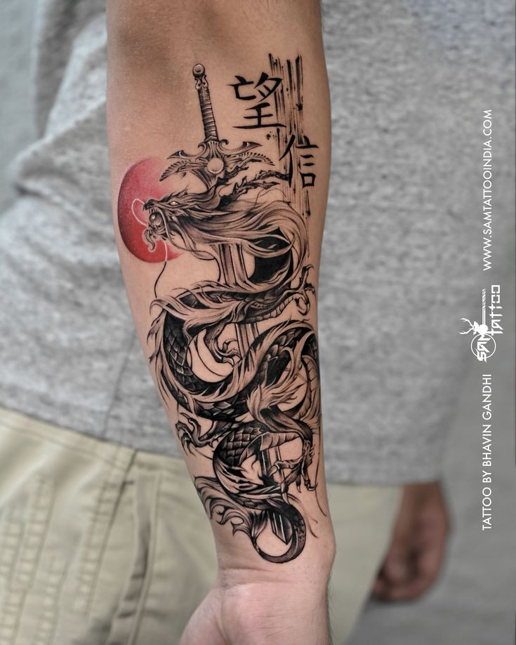

Japanese tattoos
About japanese tattoos
- Japanese tattoos, also known as Irezumi, have a rich and intricate history, deeply rooted in Japanese culture and traditions. Here's a closer look at what makes them unique:
Characteristics
- Bold Colors: Traditional Japanese tattoos often feature vibrant and contrasting colors.
- Detailed Designs: These tattoos are known for their elaborate and detailed designs, often covering large areas of the body
- Symbolic Imagery: Common motifs include dragons, koi fish, cherry blossoms, samurai, geisha, and mythical creatures.
Popular Motifs and Their Meanings
- Dragon (Ryu): Symbolizes strength, wisdom, and protection.
- Koi Fish: Represents perseverance, determination, and courage. Different colored koi fish also carry specific meanings.
- Cherry Blossoms (Sakura): Symbolize the transient nature of life and beauty, often reflecting the fleeting beauty of existence.
- Tiger (Tora): Symbolizes strength and courage, as well as protection against bad luck and evil spirits.
- Phoenix (Hō-ō): Represents rebirth, triumph, and transformation.
- Samurai: Embodies honor, bravery, and loyalty.
- Geisha: Reflects beauty, grace, and artistry.



